Final project prototypes
Prototype 1
Concept
I want to create an experience that would allow people to take agency of their own data and observe a glimpse of endless possibilities that are made possible with biometric data. In order to convey an idea, one must be able to captivate the audience first, and the Biometric Moodboard is my way of captivating the public with mesmerizing designs. Biometric Moodboard is an interactive installation that involves the biometric data of the audience to create unique experiences. Upon entering the exhibit, the audience would walk up to a large vertical screen, and place their hand on the marked area on the screen. The screen would then display an array of biometric data gathered from the individual, such as heartbeat, body temperature, weight, height, and more. After the initial data gathering stage by the screen, light installations would begin to shine down from above, creating generated visuals specific to each individual's biometric data among all four walls. Upon seeing the unique generated visuals and knowing that they are created from their own biometric data, I hope the audience would then gain a sense of ownership over the visuals as well as the data that created them, and thus recognize the values of biometric data. This experience is meant to be an individual one, and at the end of the light show, the viewer would then be guided towards a podium at the end of the room, and a clear acrylic card with the viewer's biometric data laser etched on the surface.
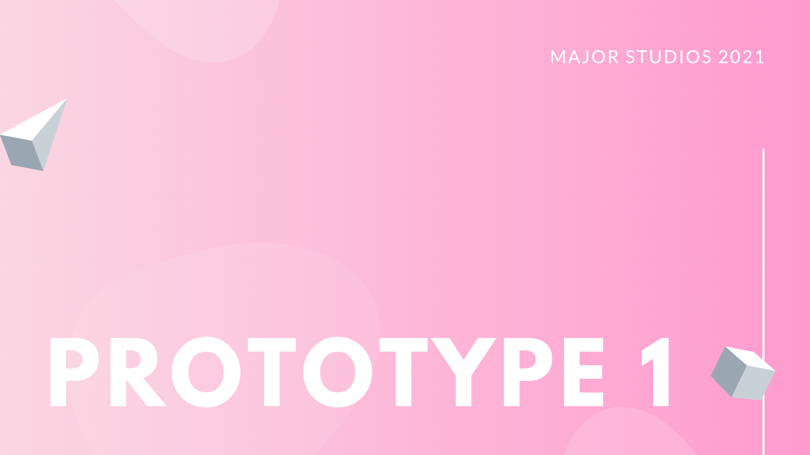 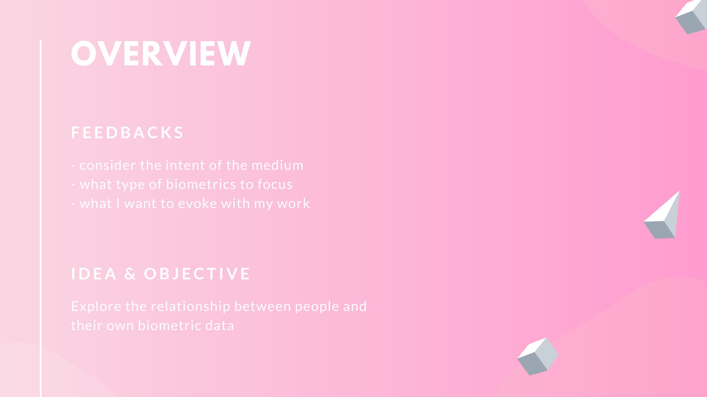 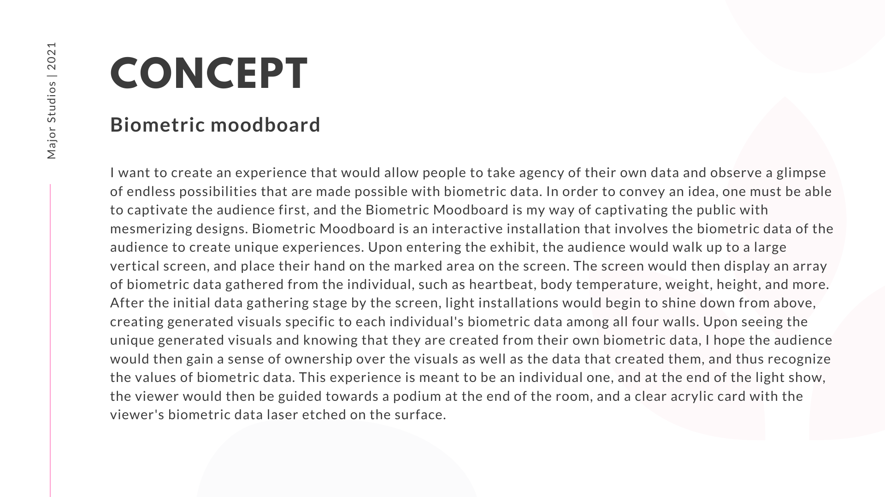 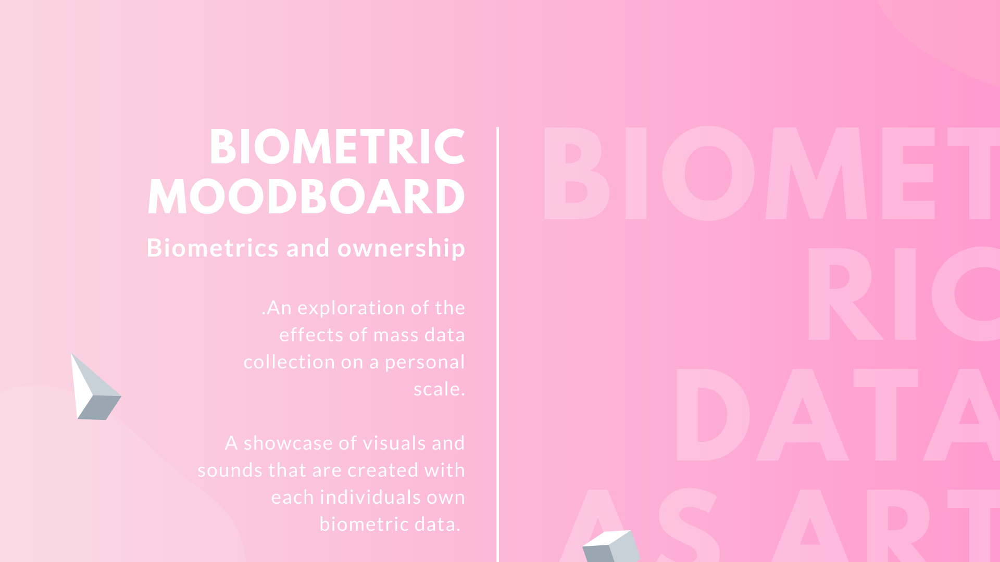 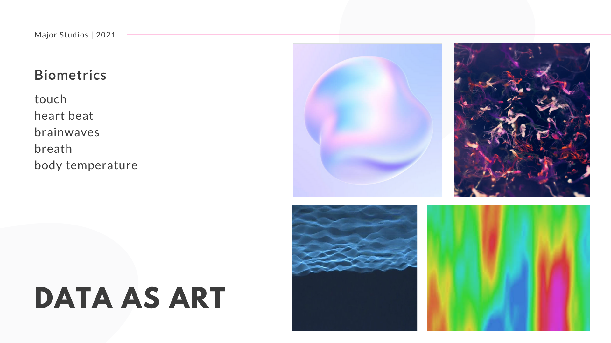 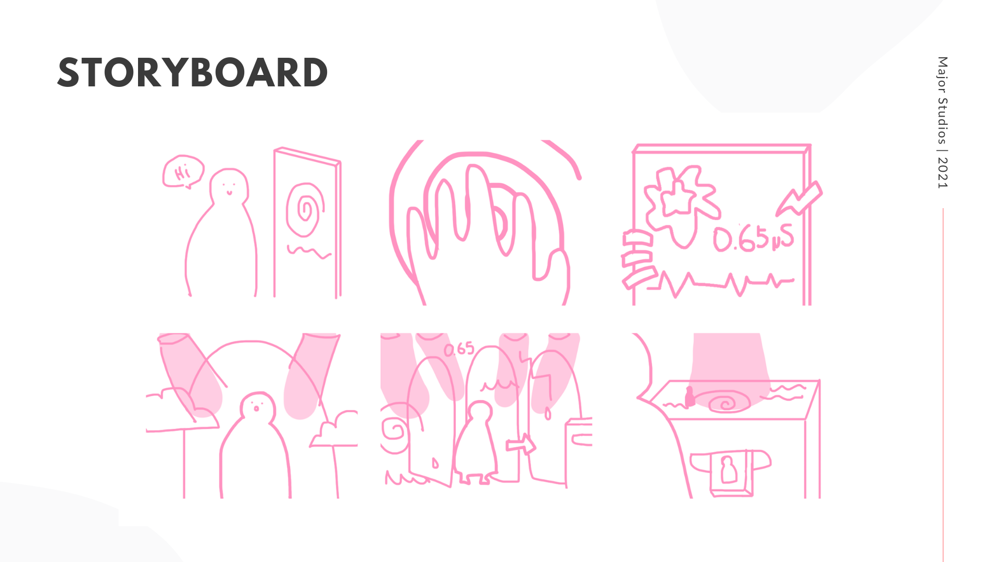
Prototype 2
Concept
The microbiome is defined as the collective genomes of the microbes that live inside and on the human body. According to researchers at Harvard T.H. Chan School of Public Health, personal microbiomes contain enough distinguishing features to uniquely identify an individual over time, much like a fingerprint. There is something special with the idea that a high private piece of information, such as the microbiome identification systems in your body, can be used in a very public setting and able to evoke a uniformed feeling from the public. It is essentially a play on the idea of personal security ramification, and instead of focusing on what part of data to keep secret, I am focusing on what part of data I want to expose. This prototype explores the idea between data and identity, and how our relationship with data could potentially affect our relationship with our identity.
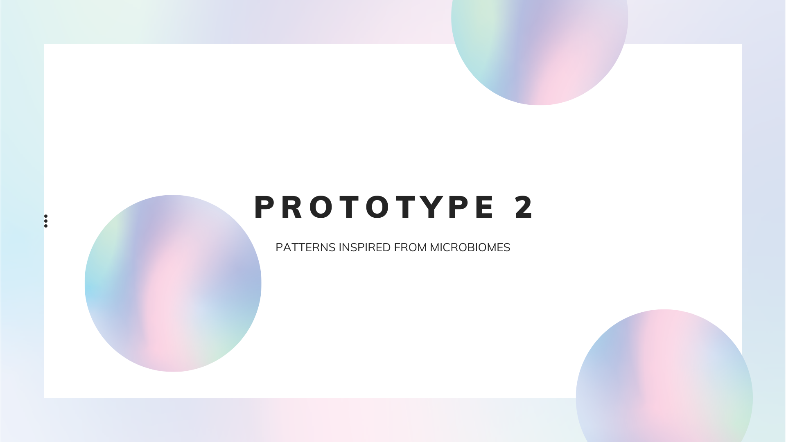 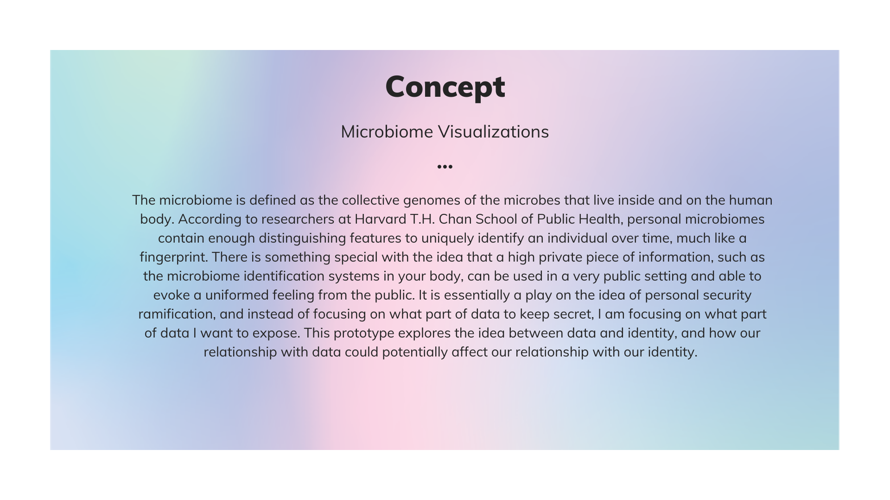 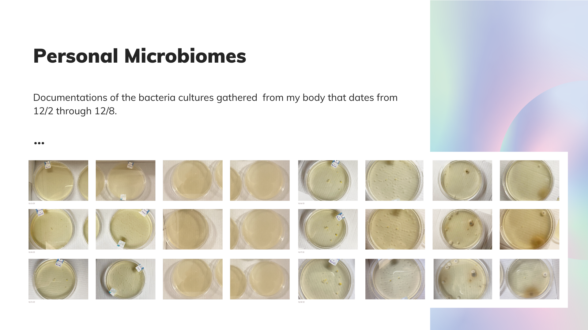 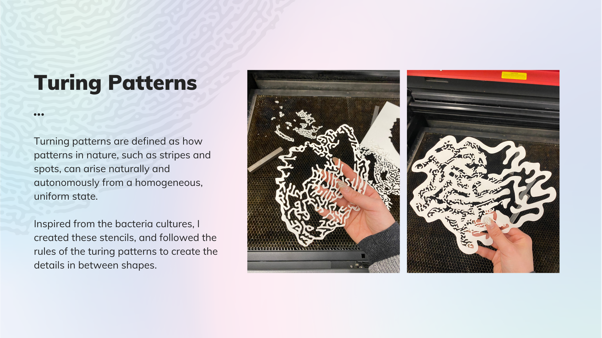Prototype 3
Concept
Bio Light Works is a multimedia installation that is focused on creating an immersive experience that allows people to experience data in a very personal and intimate manner. Bio Light Works contain visuals that are created with generative design that are inspired by my own microbiomes, and audio that is inspired by water dripping down caves. The visuals consists of smooth curves and soft lights that are gently illuminated, and it topples over the usual harshness and rigidity that are typically associated with data. The fluidity in form is echoed by the sound of flowing water, and it is a direct association with the fluidity amongst data and identity.
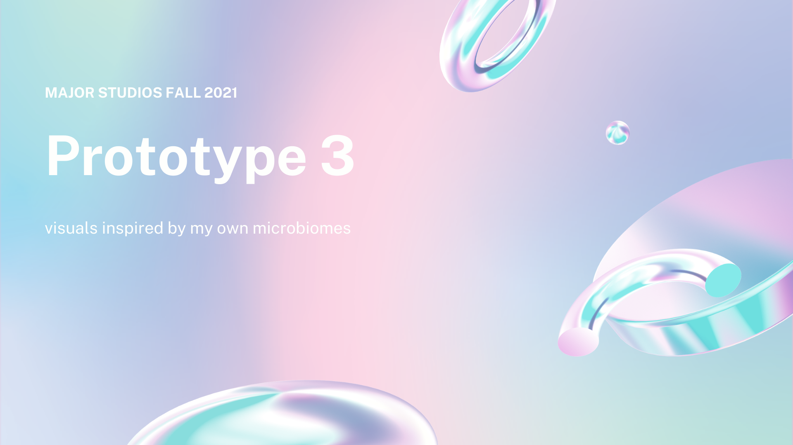 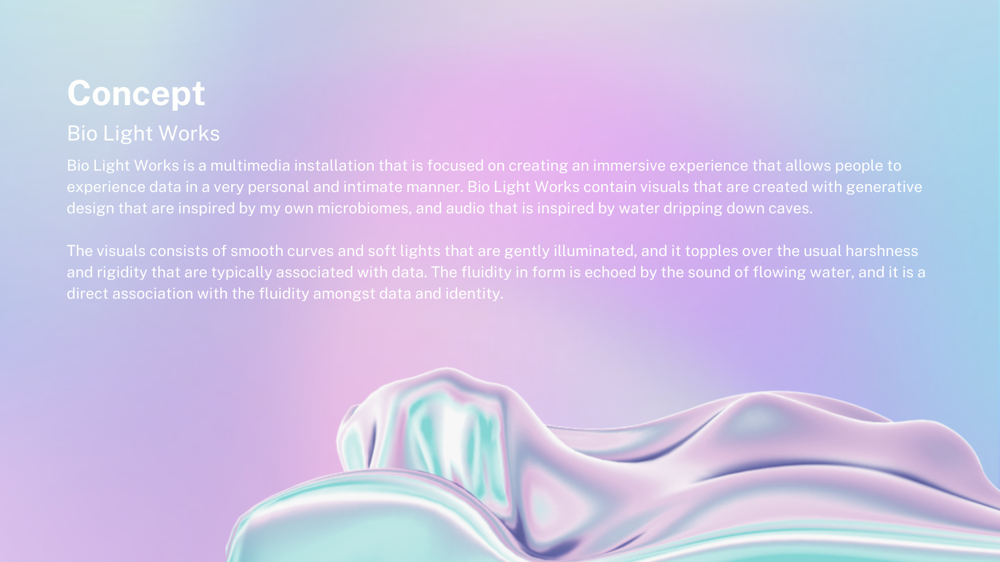 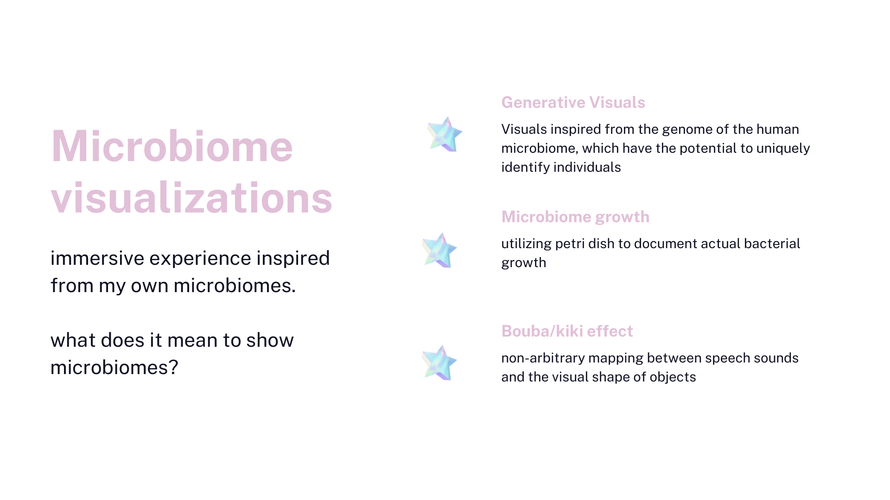 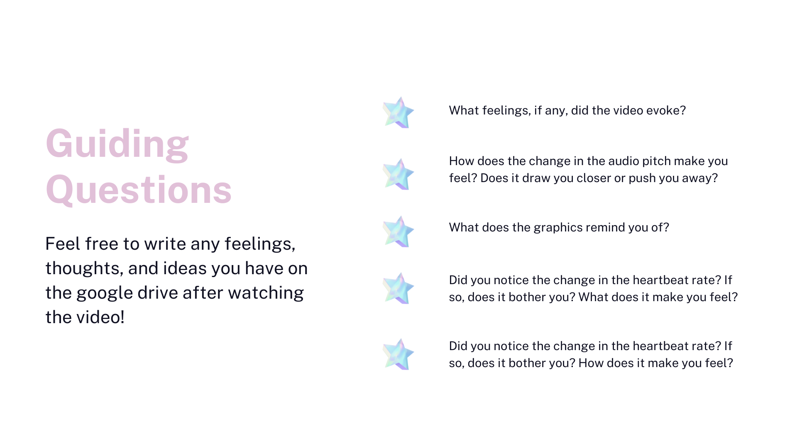Final Project
Concept
Bio Light Works is a multimedia installation that is focused on creating an immersive experience that allows people to experience data in a very personal and intimate manner. Bio Light Works contain visuals that are created with generative design that are inspired by my own microbiomes, and audio that is inspired by water dripping down caves. The visuals consists of smooth curves and soft lights that are gently illuminated, and it topples over the usual harshness and rigidity that are typically associated with data. The fluidity in form is echoed by the sound of flowing water, and it is a direct association with the fluidity amongst data and identity.
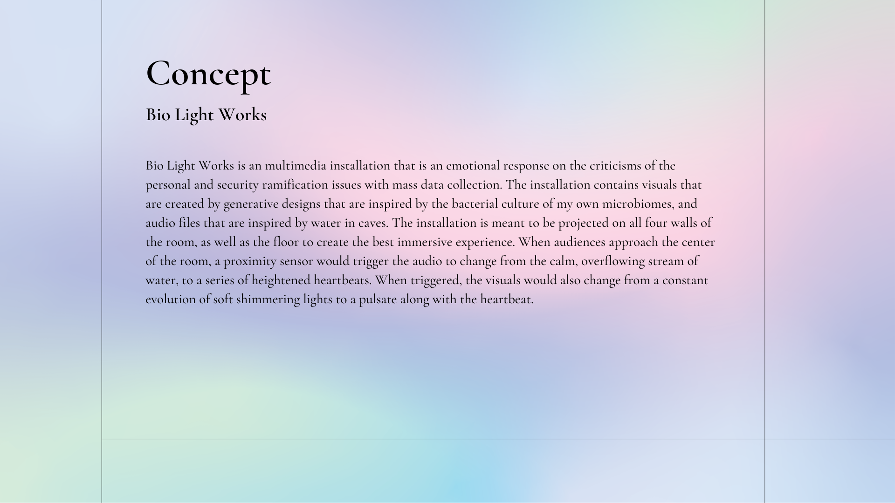 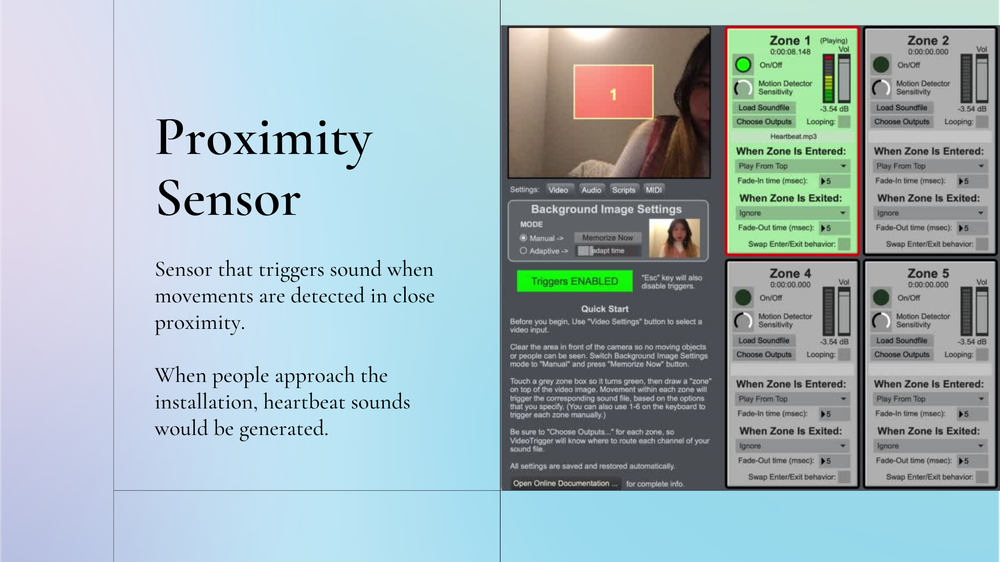 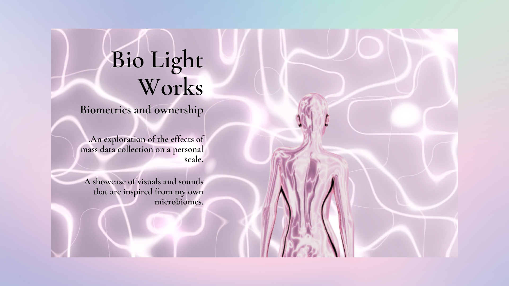